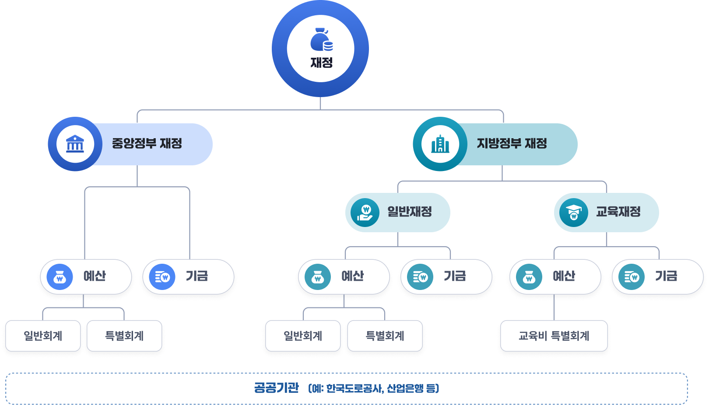

재정개요
1. 일반정부 재정
일반정부 재정은 중앙정부와 지방정부뿐 아니라, 정부가 통제하는 비영리 공공기관과 사회보장기금까지 포함해 공공재정 전체를 보는 개념입니다. 오늘날 재정은 정부부처 외에도 공공기관을 통해 상당 부분 집행되므로 일반 정부 기준을 써야 국가의 실제 수입・지출・부채 규모와 재정 지속가능성을 정확히 파악할 수 있습니다. 이는 국제통화기금(IMF, International Monetary Fund)의 ｢정부재정통계편람｣(GFS, Government Finance Statistics Manual)에 기반한 개념으로, 재정 통계의 객관적인 국제비교 및 투명성･신뢰성 제고를 위하여 활용됩니다.
2. 중앙정부 재정
중앙정부 재정은 국가 전체를 대표하는 중앙정부가 조세, 국채, 세외수입 등을 통해 재원을 마련하고, 이를 국방·외교·치안·복지·산업정책 등 전국 단위의 공공기능에 사용하는 재정입니다. 거시경제 안정과 소득재분배, 국가균형발전 조정 기능까지 맡기 때문에 정책 범위와 파급효과가 가장 넓습니다. 법률에 따라 집행되는 예산과 기금이 포함되며, 국가의 재정건전성과 채무관리의 핵심 기준이 됩니다. 결국 중앙정부 재정은 국가가 직접 책임지는 재정이라고 볼 수 있습니다. 국민이 체감하는 핵심 공공서비스의 상당 부분도 이 재정을 통해 집행됩니다.
3. 지방재정
지방재정은 지방자치단체가 지역 주민의 생활과 지역 발전을 위해 운용하는 재정으로, 지방세·세외수입·지방교부세·국고보조금 등을 재원으로 합니다. 도로, 상하수도, 지역복지, 문화·체육, 지역개발처럼 생활과 밀접한 사업이 중심이며, 지역별 수요에 맞춘 자율적 집행이 특징입니다. 지방재정은 주민과 가장 가까운 수준에서 공공서비스를 제공한다는 점에서 지방자치의 실질적 기반입니다. 동시에 지역 간 재정력 차이가 커서 중앙정부의 조정과 재정지원이 중요한 영역이기도 합니다. 따라서 지방재정은 지역 문제를 지역에서 해결하기 위한 재정이라고 이해할 수 있습니다.
4. 지방교육재정
지방교육재정은 시・도교육청이 유치원, 초・중・고등교육을 지원하기 위한 편성・집행하는 재정으로, 지방교육재정교부금과 지방자치단체로부터의 이전이 교육비특별회계의 핵심 재원입니다. 학교시설 확충, 교원 인건비, 무상교육, 교육복지, 교육행정 운영 등 교육서비스 전반에 사용됩니다. 지방자치단체의 일반재정과는 구분되며, 교육의 공공성과 안정성을 확보하기 위해 별도의 재정체계를 갖습니다. 교육은 장기적 인적자본 형성의 기반이므로, 지방교육재정은 단순한 행정비가 아니라 미래 성장과 사회통합에 직결됩니다. 그래서 지방교육재정은 지역 교육을 안정적으로 운영하기 위한 독립적 재정으로 볼 수 있습니다.
5. 공공기관
공공기관은 국가 재정에서 공공기관은 단순한 보조기관이 아니라, 정부의 투자·출자·재정지원 아래 공공서비스와 정책사업을 수행하는 공기업, 준정부기관, 기타공공기관을 뜻합니다. 이들은 국가가 직접 운영하기 어려운 영역에서 정책을 집행하고, 서비스 공급을 담당하며, 재정의 전달·보완 통로가 되는 재정 주체입니다. 실제로 전기·가스·철도·도로 같은 기반서비스와 국민연금·건강보험 같은 사회보장서비스, 연구개발과 산업·문화 진흥 기능까지 폭넓게 담당합니다. 따라서 국가재정은 예산서에 드러나는 중앙·지방정부 재정만으로는 충분히 설명되지 않고, 공공기관을 통해 흘러가는 재정활동까지 함께 봐야 실제 규모와 경제적 영향력을 정확히 파악할 수 있습니다.
